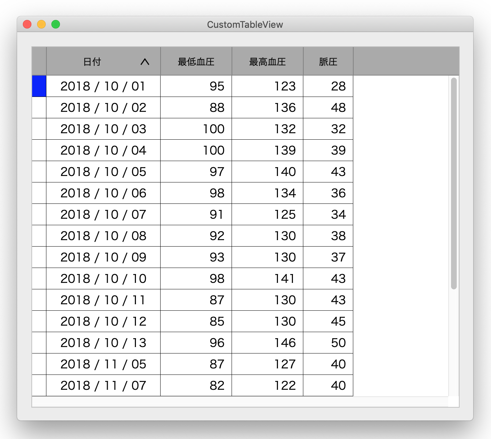
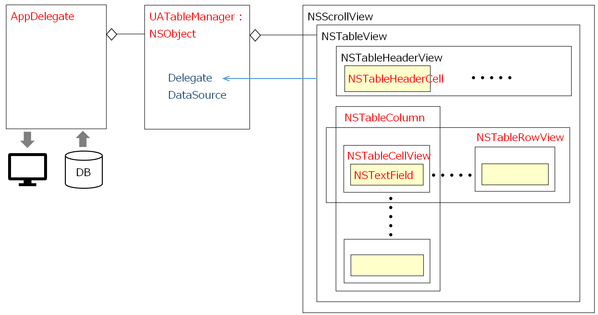

テーブルビューをプログラムにより作成する
macOS Mojava 10.14.6 / Xcode 11.3.1 / Swift 5.0
テーブルビューをインタフェースビルダーを使わず、全てプログラムのコードにより作成してみた。これによって、テーブルビューの機能は活用しつつ、主にテーブルビューの外観について、比較的自在に調整・変更が可能になる。

本例では、行の高さとフォント変え、セルの枠に罫線を引く。現在行を行の先頭の青色ハイライトで示す。列見出しの高さと背景色とフォントを変える、といったカスタマイズを行った。
また、列見出しをクリックするとその列をキーにデータをソートするようにしているので、列見出しの中にソートの方向を示すインディケータ表示する。
なお、コードによる実装化のメリットは、処理方式、UIデザインの「標準化」を容易にすることである。これはインタフェースビルダーを使ったUIオブジェクトの作成より優れたやり方だと思う。（あまり想像できないが）もし、Macをクライアント端末とした大規模な業務系のシステムを構築することがあれば、このような方法を取り入れることについて十分検討されるべきだろう。
クラス構成

コントローラクラス（UATablaManager）は、テーブルビューオブジェクトを作成し、テーブルビューのDelegateとDarasouceとしてオブジェクトの動きを制御する。なお、テーブルビューとは、NSTableViewオブジェクとそれを内包するNSScrollViewオブジェクトを組み合わせたものを指す。
図中の赤文字で記したクラスは、そこから派生してサブクラスを作成している。（NSTextField → UATextField 等）
本サンプルは、日々の血圧値の一覧を表示する。APPDelegateクラスは UATablaManagerオブジェクトを作成・保持し、DBから取得したデータを渡すという仕組みになっている。
気になる点
表示に関しては基本的には Viewベースが一般的になってきた流れの中で、列見出しを表示するクラス NSTableHeaderCellは NSCellクラスに基づいている。それが原因と思われるが、列見出しの表示とデータセルの表示が微妙にズレる。具体的には、縦の罫線は、太さ、色、表示位置とも BeziePathにより全く同じように描画しているのだが、よく見ると微妙に異なっている。細かいことではあるが気持ちが良くない。（私の実装方法が間違っているのだろうか？いずれにしろ、列見出しも Viewベースの表示方式がサポートされると良いのだが）
ソースコード
UATableManager コントローラ
UATableColumn 列オブジェクト
UATableCellView セルオブジェクト
UATextField セルの中のテキストフィールド
UATableRowView 行オブジェクト
UATableHeaderCell 列見出しオブジェクト
GitHub
※ AppDelegate データを取得する処理はコメントアウトしている。辞書の定義に従い各自作成してください。